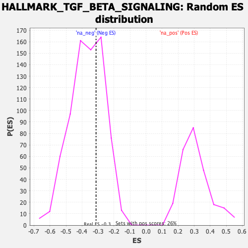

| | | Dataset | gsea_amp_ratios |
| Phenotype | NoPhenotypeAvailable |
| Upregulated in class | na_neg |
| GeneSet | HALLMARK_TGF_BETA_SIGNALING |
| Enrichment Score (ES) | -0.3123184 |
| Normalized Enrichment Score (NES) | -0.85025895 |
| Nominal p-value | 0.6657682 |
| FDR q-value | 1.0 |
| FWER p-Value | 1.0 |
Table: GSEA Results Summary
 Fig 1: Enrichment plot: HALLMARK_TGF_BETA_SIGNALING
Fig 1: Enrichment plot: HALLMARK_TGF_BETA_SIGNALING
Profile of the Running ES Score & Positions of GeneSet Members on the Rank Ordered List
| SYMBOL | RANK IN GENE LIST | RANK METRIC SCORE | RUNNING ES | CORE ENRICHMENT | | 1 | TGFBR1 | 226 | 0.832 | -0.0407 | No |
| 2 | THBS1 | 292 | 0.673 | -0.0126 | No |
| 3 | SERPINE1 | 404 | 0.428 | -0.0307 | No |
| 4 | KLF10 | 484 | 0.238 | -0.0498 | No |
| 5 | SMAD6 | 492 | 0.221 | -0.0332 | No |
| 6 | ID3 | 611 | -0.000 | -0.0942 | No |
| 7 | ID1 | 772 | -0.226 | -0.1563 | No |
| 8 | SLC20A1 | 944 | -0.404 | -0.2078 | No |
| 9 | TGIF1 | 1027 | -0.511 | -0.2034 | No |
| 10 | JUNB | 1044 | -0.521 | -0.1640 | No |
| 11 | SMAD7 | 1078 | -0.550 | -0.1306 | No |
| 12 | ID2 | 1430 | -0.946 | -0.2255 | Yes |
| 13 | BMP2 | 1453 | -0.969 | -0.1481 | Yes |
| 14 | BCAR3 | 1469 | -0.989 | -0.0651 | Yes |
| 15 | SKI | 1587 | -1.170 | -0.0184 | Yes |
| 16 | SMURF1 | 1872 | -2.227 | 0.0388 | Yes |
Table: GSEA details [plain text format]

Fig 2: HALLMARK_TGF_BETA_SIGNALING: Random ES distribution
Gene set null distribution of ES for HALLMARK_TGF_BETA_SIGNALING